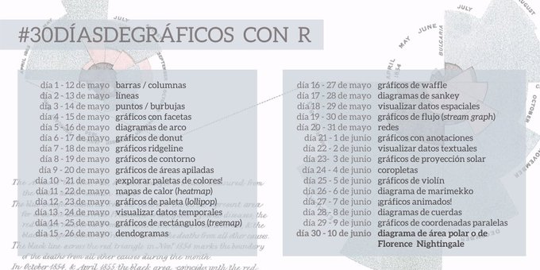
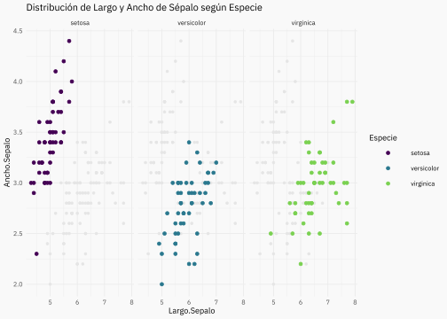
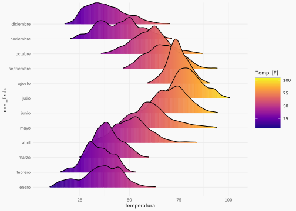
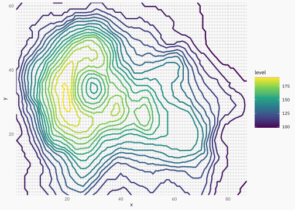
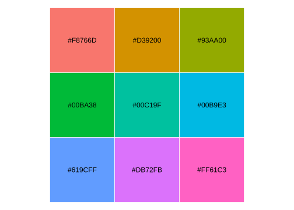
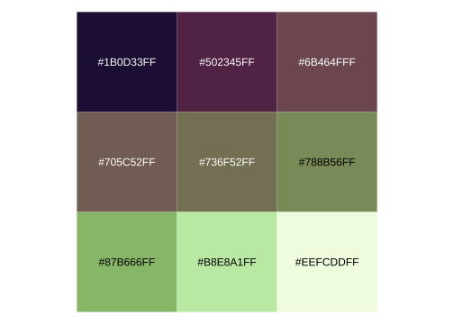
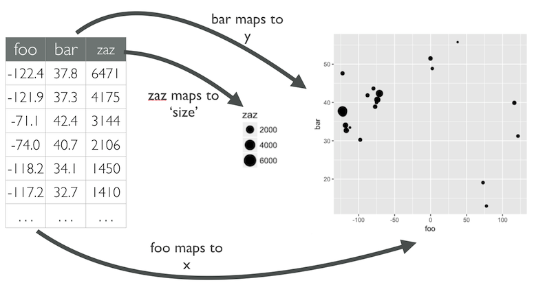

Introducción
Agradecer por la iniciativa a la comunidad de R4DS_es <3:

Este post es muy espacial pues cumpl(e|irá|iría) muchas características.
- Será el primero en español en este blog!
- Haré la mayoría de gráficos con el paquete {highcharter}, intentando ser lo más claro posible con el fin de que sirva también como introducción, casos de usos y ejemplos para el paquete. Partiremos de menos a más: desde las funciones básicas, complementando luego con mejores práctivas y agregando funcionalidades desde le mundo Javascript y HTML.
- También comentaremos usos y cuidados de cada uno de los tipos de gráficos para que esto también sea termine siendo una ayuda al comenzar este viaje en el mundo de la visualización. Dicho lo anterior intentaré ir siempre dando link de material de ayuda a buenas fuentes de información.
Así que sin más, vamos a cargar los paquetes necesarios que en este caso serán {datos} para los data frames, {highcharter} y {ggplot2} para graficar y {dplyr} para la manipulación de datos. Eventualmente utilizaremos otros paquetes como {lubridate} o {forcats} a medida que necesitemos de ellos.
Día 1: barras/columnas
El gráfico más popular, quizás el más fácil de leer. Algunas consideraciones:
- Generalmente se utliza para visualizar conteos o cantidades agrupadas.
- No es recomendable usar muchas categorías. Obviamente dependerá del espacio pero la idea es no generar tantas barras para seguir viendo las categorías
Code
conteo_clases <- count(millas, clase)
conteo_clases# A tibble: 7 × 2
clase n
<chr> <int>
1 2asientos 5
2 compacto 47
3 mediano 41
4 minivan 11
5 pickup 33
6 subcompacto 35
7 suv 62Ahora teniendo listo del data frame, usaremos la función hchart del paquete highcharter. La forma de utilizarlo es hchart(dataframe, tipografico, hcaes(mapeo))
De esta forma obtenemos nuestro gráfico interactivo con {highcharter}:
En un gráfico de barras usualmente se ordenan los conteos y siempre es bueno dar más contexto a la visualización con un título y/o súbtítulo. Para lo primero reordenaremos los registros de forma descente con la función y convertiremos la variable clase en un factor cuyos niveles estén ordenados según cantidad de vehículos. Para agregar el título usaremos la función hc_title usando el argumento text:
Code
library(forcats) # para usar la función fct_inorder
conteo_clases <- conteo_clases %>%
arrange(-n) %>%
mutate(clase = fct_inorder(clase))
hc01 <- hchart(conteo_clases, "column", hcaes(x = clase, y = n), name = "Conteo") %>%
hc_title(text = "Conteo de tipos de automóviles en los datos 'millas'")
hc01Día 2: líneas
Otro clásico. El gráfico de lineas se utiliza generalmente cuando existe una variable temporal en nuestros datos. También tiene sus variaciones como los slopecharts o bumpcharts.
Los datos que utilizaremos corresponden de paises del paquete {datos}, que orignalmente pertencen al {gapminder}. Para simplificar la información agrouparemos por continente y año para obtener un promedio ponderado por la población de cada país.
Code
continentes <- paises %>%
group_by(anio, continente) %>%
summarise(
pib_per_capita_pond = weighted.mean(pib_per_capita, poblacion),
esperanza_de_vida_pond = weighted.mean(esperanza_de_vida, poblacion)
)
continentes# A tibble: 60 × 4
# Groups: anio [12]
anio continente pib_per_capita_pond esperanza_de_vida_pond
<int> <fct> <dbl> <dbl>
1 1952 África 1311. 38.8
2 1952 Américas 8528. 60.2
3 1952 Asia 806. 42.9
4 1952 Europa 6097. 64.9
5 1952 Oceanía 10136. 69.2
6 1957 África 1445. 40.9
7 1957 Américas 9098. 62.0
8 1957 Asia 998. 47.3
9 1957 Europa 7535. 66.9
10 1957 Oceanía 11192. 70.3
# ℹ 50 more rowsEn esta oportunidad utilizaremos group = continente al realizar el mapeo para separar los datos según esta variable.
¿Qué podemos mejora? ¡Mucho! Por ejemplo es dificil comparar para un mismo año, los valores aparecen con muchos decimales, podemos mejorar las leyendas para que sea más fácil asociar las líneas, colores y continentes, para eso usaremos la funciòn hc_tooltip para modificar el tooltip y hc_legend para mejorar las leyendas
Día 3: puntos/burbujas
Seguimos con los gráficos tradicionales. El gráfico de puntos o scatter plot se utiliza generelamente para observa la relación entre dos variables continuas. Luego el gráfico se puede complementar/complejizar agregando tamaño, forma, colores a los puntos para agregar más información.
Code
paises_2007 <- filter(paises, anio == 2007)
paises_2007# A tibble: 142 × 6
pais continente anio esperanza_de_vida poblacion pib_per_capita
<fct> <fct> <int> <dbl> <int> <dbl>
1 Afganistán Asia 2007 43.8 31889923 975.
2 Albania Europa 2007 76.4 3600523 5937.
3 Argelia África 2007 72.3 33333216 6223.
4 Angola África 2007 42.7 12420476 4797.
5 Argentina Américas 2007 75.3 40301927 12779.
6 Australia Oceanía 2007 81.2 20434176 34435.
7 Austria Europa 2007 79.8 8199783 36126.
8 Baréin Asia 2007 75.6 708573 29796.
9 Bangladesh Asia 2007 64.1 150448339 1391.
10 Bélgica Europa 2007 79.4 10392226 33693.
# ℹ 132 more rowsDe la forma usual, utilizaremos la función hchart:
Es un buen gráfico para patir ¿no? Ahora intentaremos:
- Agregar información de la población a través del tamaño del punto (mapeo!).
- Utilizar captions para dar contexto o una explicación de lo que se puede observar. Utilizaremos código HTML, esto es tags como:
<b></b>para negrita<i></i>para itálicas,<br/>para salto de línea, etc. existen muchos y nunca están de más conocerlos. - Simplificar el tooltip indicando solamente el nombre del país, para esto utilizaremos el argumento
pointFormaten la funciónhc_tooltipdando como valor"{point.pais}":{}indica que será un valor dinámico (bien simplificado este comentario),pointsiempre va pues se refiere al punto que el tooltip se está refiriendo, finalmentepaispara señalar que utilizaremos esta columna del data frame. - Finalmente, cuando existen variables que son asimétricas -están cargadas hacia un lado- es bueno probar cambiando la escala del eje, en nuestro caso el PIB. Acá será útil nuevamente el caption para recordar que se está usando escala logarítmica. Esto se hace con simplemente
hc_xAxis(type = "logarithmic").
Code
texto_explicativo <- "El gráfico nos muestra la relación entre el
<b>PIB percápita</b> y la <b>Esperanza de vida</b> para países en el año 2007.
Se observa que la gran cantidad de paise con baja esperanza de vida pertenecen
al continente Africano de los cuales la mayoría posee bajo PIB per cápita.<br/>
Para <b>PIB percápita</b> se está utlizando una escala <i>logarítmica</i> debido
a la asimetría de esta variable."
hc03 <- hchart(
paises_2007,
"scatter",
hcaes(pib_per_capita, esperanza_de_vida, group = continente, z = poblacion),
maxSize = 30 # para fijar y setar el tamaño máximo
) %>%
hc_tooltip(pointFormat = "{point.pais}") %>%
hc_caption(text = texto_explicativo) %>%
hc_title(text = "Relación entre PIB y Esperanza de vida") %>%
hc_xAxis(type = "logarithmic")
hc03Día 4: gráficos con facetas
Las facetas son una buena forma de desaturar un gráfico con mucha información visual creando pequeños graficos particionando los datos. En este caso, no son muchos los paquetes o librerías que manejan tan bien esta característica o funcionalidad como {ggplot2}. En el caso de {highcharter} esta funcionalidad es limitada además manual, teniendo como solución realizar gráficos por separado y luego mostrándolos todos juntos.
Siguiendo con {ggplot2}, esta se realiza automágicamente con la función facet_wrap (existe también ?facet_grid) indicando por que variable partcionar los datos. Un tip que veces se utiliza es plotear todos los datos en cada faceta con un color suave con el fin de comparar la distribución o forma de los datos particulares de la faceta con el total. Esto se hace agregando una capa (geom) del mismo tipo con unos datos que no posean la variable para realizar las facetas; que en nuestro ejemplo es Especie:
Code
flores_auxiliar <- flores %>%
select(Largo.Sepalo, Ancho.Sepalo)
ggplot(flores) +
geom_point(aes(Largo.Sepalo, Ancho.Sepalo), color = "gray90", data = flores_auxiliar, size = 1) +
geom_point(aes(Largo.Sepalo, Ancho.Sepalo, color = Especie), size = 1.5) +
scale_color_viridis_d(end = 0.8) +
facet_wrap(vars(Especie)) +
labs(title = "Distribución de Largo y Ancho de Sépalo según Especie")
Medio/Avanzado. Si quisiéramos realizar de todas formas con {highcharter}, una solución sería la siguiente: crear ejes 3 ejes, una para cada Especie/grupo y luego asignar para cada grupo un eje.
Code
hc04 <- hchart(
flores,
"scatter",
hcaes(Largo.Sepalo, Ancho.Sepalo, group = Especie),
yAxis = c(0, 1, 2) # parte clave para asignar cada grupo a cada eje Y
) %>%
# esta es la parte donde se crean *manualmente* 3 ejes.
hc_yAxis_multiples(
create_yaxis(
naxis = 3,
lineWidth = 2,
title = purrr::map(0:2, ~list(text = "Ancho.Sepalo"))
)
) %>%
hc_title(text = "Distribución de Largo y Ancho de Sépalo según Especie")
hc04Día 5: diagrama de arcos
Los diagrama de arcos son un caso de especial de layout al graficar redes. Layout se refiere a la distribución visual de nodos (o vertices) y aristas. Las redes muestran relacion entre pares de observaciones en los datos.
En lo personal el layout no me agrada mucho pues no lo considero algo que aporte. De todas formas existe mucha documentación para realizar este tipo de gráficos con {ggplot2} con ayuda de la librería {ggraph} cuya documentación está acá.
Día 6: donut
¿A quien no le gustan las donas? Los gráficos de donut son un caso especial de los gráficos de pie en el cual se remueve parte del centro el cual reduce la distorción (visual) al percibir las cantidades. Este gráfico, al igual que el pie, se utiliza generalmente para demostrar la distribución de un total.
Para realizar un gráfico de donut con {highcharter} se debe considerar lo siguiente:
- Hace un gráfico de tipo “pie” utilizando los argumentos
nameeyen el mapeo para la categoría y cantidad respectivamente. - Usar el argumeno
innerSizecon algún porcentaje para cuanta área remover y así obtener un gráfico de donut. - En este caso particular, calcularemos el porcentaje como valor y luego con el paquete {scales} transformaremos ese número en formato procentaje.
- Con el valor anterior lo utilizaremos para crear etiquetas (labels) con más información usando el argumento
dataLabelscon el valor"{point.name}<br>({point.porcentaje})"esto escribirá algo del tipo: “categoría (porcentaje%)” para cada punto.
Code
# A tibble: 5 × 3
corte n porcentaje
<ord> <int> <chr>
1 Regular 1610 3.0%
2 Bueno 4906 9.1%
3 Muy bueno 12082 22.4%
4 Premium 13791 25.6%
5 Ideal 21551 40.0% Code
Medio/Avanzado. Ahora intentaremos utilizar el espacio interior para colocar un tooltip más grande y más textual (como un knob chart). Otra parte importante es utilizar el argumento positioner en highcharts con el fin de que independiente del valor en el cual el cursor está, éste siempre este al medio del gráfico.
Code
hc06 %>%
# con la siguiente opción desactivamos los 'dataLabels' para que no
# exista infomración redundante
hc_plotOptions(
series = list(dataLabels = list(enabled = FALSE))
) %>%
hc_tooltip(
useHTML = TRUE,
style = list(fontSize = "30px"),
headerFormat = "",
pointFormat = "<div style='text-align: center;'>Corte <b>{point.name}</b><br>{point.y} casos<br>{point.porcentaje} del total</div>",
positioner = JS(
"function () {
/* one of the most important parts! */
xp = this.chart.chartWidth/2 - this.label.width/2
yp = this.chart.chartHeight/2 - this.label.height/2
return { x: xp, y: yp };
}"),
shadow = FALSE,
borderWidth = 0,
backgroundColor = "transparent",
hideDelay = 1000
)Día 7: ridgeline
El gráfico de tipo ridgeline viene a solucionar la superposición de muchas densidades (o histogramas) haciendo distintos ejes x dependiendo de una variable. Trabajarlo con {ggplot2} es muy sencillo dada la extensión {ggridges} por Claus Wilke.
Code
# install.packages("ggridges")
library(ggridges)
library(lubridate)
clima <- clima %>%
mutate(
fecha = ymd(paste(anio, mes, dia, paste = "-")),
mes_fecha = fct_inorder(months(fecha))
)
gg07 <- ggplot(clima, aes(x = temperatura, y = mes_fecha, fill = stat(x))) +
geom_density_ridges_gradient(scale = 3, rel_min_height = 0.01) +
scale_fill_viridis_c(name = "Temp. [F]", option = "C")
gg07
Directo y sin mucha complicación.
Avanzado. HighchartsJS -por tanto {highcharter}- no soporta este tipo de gráfico… Pero, pero, peeero podemos todavía crearlo con ayuda del gráfico anterior. ¡¿Cómo?! Cuando uno grafica una densidad, como el caso anterior todo la información es traducida a posiciones, colores y otras características, las cuales {ggplot2} emplea para realizar finalmente grafico. Gracias a la funcion ggplot_build se puede acceder a dichos datos por lo que se pueden emplear para graficar con {highcharter}.
Nos ayudaremos con los tags de {htmltools} para que sea más facil definir la tabla en HTML en el argumento pointFormat.
Code
library(htmltools)
dd07 <- as_tibble(ggplot_build(gg07)$data[[1]])
glimpse(dd07)Rows: 6,144
Columns: 22
$ fill <chr> "#0D0887", "#0F0887", "#110888", "#130888", "#150888", …
$ height <dbl> 4.025610e-06, 6.009589e-06, 8.838627e-06, 1.281201e-05,…
$ x <dbl> 6.208682, 6.401564, 6.594446, 6.787328, 6.980209, 7.173…
$ density <dbl> 4.025610e-06, 6.009589e-06, 8.838627e-06, 1.281201e-05,…
$ ndensity <dbl> 0.0001013047, 0.0001512317, 0.0002224246, 0.0003224150,…
$ datatype <chr> "ridgeline", "ridgeline", "ridgeline", "ridgeline", "ri…
$ y <mppd_dsc> 1, 1, 1, 1, 1, 1, 1, 1, 1, 1, 1, 1, 1, 1, 1, 1, 1,…
$ PANEL <fct> 1, 1, 1, 1, 1, 1, 1, 1, 1, 1, 1, 1, 1, 1, 1, 1, 1, 1, 1…
$ group <int> 1, 1, 1, 1, 1, 1, 1, 1, 1, 1, 1, 1, 1, 1, 1, 1, 1, 1, 1…
$ iscale <dbl> 12.13373, 12.13373, 12.13373, 12.13373, 12.13373, 12.13…
$ scale <dbl> 3, 3, 3, 3, 3, 3, 3, 3, 3, 3, 3, 3, 3, 3, 3, 3, 3, 3, 3…
$ rel_min_height <dbl> 0.01, 0.01, 0.01, 0.01, 0.01, 0.01, 0.01, 0.01, 0.01, 0…
$ ymin <mppd_dsc> 1, 1, 1, 1, 1, 1, 1, 1, 1, 1, 1, 1, 1, 1, 1, 1, 1,…
$ ymax <mppd_dsc> 1.000147, 1.000219, 1.000322, 1.000466, 1.000667, …
$ min_height <dbl> 0.000824149, 0.000824149, 0.000824149, 0.000824149, 0.0…
$ colour <chr> "black", "black", "black", "black", "black", "black", "…
$ linewidth <dbl> 0.5, 0.5, 0.5, 0.5, 0.5, 0.5, 0.5, 0.5, 0.5, 0.5, 0.5, …
$ linetype <dbl> 1, 1, 1, 1, 1, 1, 1, 1, 1, 1, 1, 1, 1, 1, 1, 1, 1, 1, 1…
$ alpha <lgl> NA, NA, NA, NA, NA, NA, NA, NA, NA, NA, NA, NA, NA, NA,…
$ point_shape <dbl> 19, 19, 19, 19, 19, 19, 19, 19, 19, 19, 19, 19, 19, 19,…
$ point_size <dbl> 1.5, 1.5, 1.5, 1.5, 1.5, 1.5, 1.5, 1.5, 1.5, 1.5, 1.5, …
$ point_stroke <dbl> 0.5, 0.5, 0.5, 0.5, 0.5, 0.5, 0.5, 0.5, 0.5, 0.5, 0.5, …Code
dd07_02 <- dd07 %>%
filter(y != ymax) %>%
filter(abs(y - ymax) >= 0.01) %>%
select(x, y, ymax, group, density) %>%
mutate_all(round, 3) %>%
arrange(group, x) %>%
rename(l = y, h = ymax)
# transformar el grupo al mes
dd07_02 <- dd07_02 %>%
mutate(
fecha = ymd(paste("2003", group, 1, paste = "-")),
mes_fecha = fct_inorder(months(fecha))
)
dd07_02# A tibble: 3,031 × 7
x l h group density fecha mes_fecha
<dbl> <mppd_dsc> <mppd_dsc> <dbl> <dbl> <date> <fct>
1 8.91 1 1.012 1 0 2003-01-01 enero
2 9.10 1 1.016 1 0 2003-01-01 enero
3 9.30 1 1.020 1 0.001 2003-01-01 enero
4 9.49 1 1.024 1 0.001 2003-01-01 enero
5 9.68 1 1.030 1 0.001 2003-01-01 enero
6 9.87 1 1.036 1 0.001 2003-01-01 enero
7 10.1 1 1.044 1 0.001 2003-01-01 enero
8 10.3 1 1.052 1 0.001 2003-01-01 enero
9 10.5 1 1.062 1 0.002 2003-01-01 enero
10 10.6 1 1.072 1 0.002 2003-01-01 enero
# ℹ 3,021 more rowsCode
hc07 <- hchart(
dd07_02,
"arearange",
hcaes(x = x, low = l - 1, high = h - 1, group = mes_fecha),
zIndex = 12:1,
lineWidth = 3
) %>%
hc_colors(viridis_pal()(12)) %>%
# tabla para distribución de datos
hc_tooltip(
shared = TRUE,
useHTML = TRUE,
headerFormat = "<b>Densidad estimada en {point.x} ºF</b><table>",
# pointFormat = '<tr><td><span style="color:{point.color}">●</span> {series.name}</td><td><b>{point.density}</b></td></tr>',
pointFormat = as.character(tags$tr(
tags$td(
tags$span(style = "color:{point.color}", "●"),
"{series.name}"
),
tags$td(tags$strong("{point.density}"))
)),
footerFormat = "</table>",
crosshairs = TRUE
) %>%
# todo esto es para limpiar los markers y halos
hc_plotOptions(
series = list(
marker = list(
radius = 0,
enabled = FALSE
),
states = list(
hover = list(
halo = list(
size = 0
)
)
)
)
) %>%
hc_legend(layout = "proximate") %>%
hc_yAxis(visible = FALSE, min = 0.5) %>%
hc_xAxis(title = list(text = "Temperatura ºF")) %>%
hc_title(text = "Distribución de temperaturas por mes") %>%
hc_subtitle(text = "Datos obtenidos del data frame <pre>clima</pre> del
paquete datos")
hc07Dia 8: contorno
¡Contornos! Este gráfico no es muy estándar, usualmente está asociado a información (geo)espacial, topográfica, o información bivariada cunado las dos variables son continuas.
Usaremos los datos volcano que está en formato matriz, la cual usando la función melt del paquete reshape lo pasaremos a formato data frame. Luego con la función geom_contour de {ggplot2} dibujaremos los contornos de nivel del volcan. Notar que el data set de entrada son puntos x e y y un valor z, el cual se generan los contornos en función de estas tres variables; graficaremos el grid de puntos para recordar que estos son los valores de entrada.
# A tibble: 5,307 × 3
x y z
<int> <int> <dbl>
1 1 1 100
2 2 1 101
3 3 1 102
4 4 1 103
5 5 1 104
6 6 1 105
7 7 1 105
8 8 1 106
9 9 1 107
10 10 1 108
# ℹ 5,297 more rowsCode
gg08 <- ggplot(volcano3d, aes(x, y, z = z)) +
geom_contour(aes(color = ..level..), bins = 20, size = 1) +
geom_point(alpha = 0.1, size = 1, fill = "black", color = "black", shape = 16) +
scale_color_viridis_c() +
coord_cartesian(expand = FALSE)
gg08
Intermedio/Anvanzado. Ahora, para realizar el mismo gráfico con {highcharter} usamos la función layer_data del paquete {ggplot2} para extraer la información de la capa geom_contour a renderizar.
Otra cosa no tan directa es colorear de acuerdo al nivel de cada linea del contorno. Para ello nos ayudaremos de la funcion colorize del paquete {highcharter} que toma un vector numérico y un set de colores e internamente utiliza la función colorRampPalette para crear una paleta de colores. Con lo anterior asociamos cada color a un nivel y extraemos los colores los cuales utilizaremos con la función hc_colors.
Code
# Usamos i = 1 pues la primera capa es la de los contornos (la 2d son los puntos)
dd08 <- as_tibble(layer_data(gg08, i = 1))
# me gusta redondear para enviar menos información al objeto highcharter
dd08 <- dd08 %>%
select(x, y, level, piece) %>%
mutate_all(round, 2)
dd08 <- dd08 %>%
mutate(col = colorize(level, viridis_pal(option = "B", end = 0.9)(50)))
cols <- dd08 %>%
distinct(level, piece, col) %>%
pull(col)
dd08 <- dd08 %>%
select(-col)Con los datos listo solo falta crear la función con hchart y agregar detalles como:
- Remover los ejes con
hc_xAxis(visible = FALSE)para tener un gráfico más limpio. - Evitar que cada línea aparezca en la leyenda con
showInLegend = FALSE. - También cambiar el default de poner el resto de series con trasnparencia cuando una está siendo selccionada con el cursor. Esto se hace con la parte
hc_plotOptions(...
Code
hc08 <- hchart(
dd08,
"line",
hcaes(x, y, group = piece),
showInLegend = FALSE,
enableMouseTracking = TRUE,
lineWidth = 0.5
) %>%
hc_colors(cols) %>%
hc_xAxis(visible = FALSE, max = 87, min = 1) %>%
hc_yAxis(visible = FALSE, max = 61, min = 1) %>%
hc_tooltip(
headerFormat = "",
pointFormat = "Nivel: <b>{point.level}</b><br>(x: {point.x}; y: {point.y})"
) %>%
hc_plotOptions(
series = list(
states = list(
inactive = list(
opacity = 0.7
)
)
)
) %>%
hc_title(text = "Información topográfica del volcán Maunga Whay en Auckland") %>%
hc_subtitle(text = "Maunga Whau es uno de los 50 volcanees en el área volcánica de Auckland. Estos
datos proveen informción topográfica para Maunga Whau en un grid de 10 por 10 metros.") %>%
hc_caption(text = "Datos digitalizados a partir de un mapa topográfico por <b>Ross Ihaka</b>. Estos datos no deben considerarse precisos.")
hc08Día 9: áreas apiladas
El gráfico de áreas apiladas, o el apilamiento en general (stacking en inglés) se utiliza para representar el total diferenciando por otra variable. A veces este gráfico acompaña bien a conteos por tiempo incluyendo una variable categórica.
Code
# install.packages("ggplot2movies")
data(movies, package = "ggplot2movies")
colores <- viridis_pal(option = "B", end = 0.8)(7)
peliculas <- movies %>%
select(anio = year, Action:Short) %>%
gather(categoria, cantidad, -anio) %>%
group_by(anio, categoria) %>%
summarise(cantidad = sum(cantidad)) %>%
mutate(
categoria = case_when(
categoria == "Action" ~ "Acción",
categoria == "Animation" ~ "Animación",
categoria == "Comedy" ~ "Comedia",
categoria == "Documentary" ~ "Documental",
categoria == "Drama" ~ "Drama",
categoria == "Romance" ~ "Romance",
categoria == "Short" ~ "Cortometraje",
TRUE ~ NA_character_
)
)
peliculas# A tibble: 791 × 3
# Groups: anio [113]
anio categoria cantidad
<int> <chr> <int>
1 1893 Acción 0
2 1893 Animación 0
3 1893 Comedia 0
4 1893 Documental 0
5 1893 Drama 0
6 1893 Romance 0
7 1893 Cortometraje 1
8 1894 Acción 0
9 1894 Animación 0
10 1894 Comedia 0
# ℹ 781 more rowsCode
Medio. Crearemos un data frame de eventos temporales, los cuales pasando a listas en un formato reconocido por highchartsJS agregaremos al gráfico como plotLines (existen también las plotBands).
Code
eventos <- tibble(
anio = c(1930, 1941, 1990),
texto = c(
"Comienzo era dorada en Hollywood.",
"Aparición de la televisión.",
"Comienzo aumento<br>del cine independiente.")
)
data_plotLine <- eventos %>%
transmute(
value = anio,
label = purrr::map(texto, ~ list(text = .x))
) %>%
mutate(color = "#666", width = 2, zIndex = 5)
hc09 <- hc09 %>%
hc_xAxis(
plotLines = list_parse(data_plotLine)
) %>%
hc_title(
text = "Cantidad de películas por Género"
) %>%
hc_caption(
text = "Datos provenientes de <b>IMDB</b> a través del paquete ggplot2movies.<br>
La Mayoria de eventos fueron obtenidos a partir de lectura flash en <b>Wikipedia</b>."
)
hc09Como segundo ejercicio ilustrativo, podemos agregar más detalles al gráfico obtenido en en los gráficos de columnas.
Code
conteo_clases_millas <- count(millas, clase, cilindros) %>%
arrange(-n) %>%
mutate(
clase = fct_inorder(clase),
clase_n = as.numeric(clase) - 1,
cilindros = factor(cilindros, c(4,5,6,8))
)
hc09_2 <- hchart(conteo_clases_millas, "column", hcaes(x = clase_n, y = n, group = cilindros)) %>%
hc_xAxis(categories = levels(pull(conteo_clases_millas, clase))) %>%
hc_title(
text = "Conteo de tipos de automóviles en los datos 'millas' diferenciando
por cantidad de cilindros"
) %>%
hc_plotOptions(
series = list(
stacking = list(enabled = TRUE)
)
) %>%
hc_tooltip(shared = TRUE)
hc09_2Día 10: paletas de colores
Más que graficar con ciertas paletas de colores tengo las ganas de mostrar algunas funciones útiltes para manejar colores en R.
La primera que se me viene a la mente es la funcion show_col del paquete {scales}. Esta función permite ver los colores de un vector de colores (duh!).
Code
[1] "#F8766D" "#D39200" "#93AA00" "#00BA38" "#00C19F" "#00B9E3" "#619CFF"
[8] "#DB72FB" "#FF61C3"Code
show_col(colores_ggplot2_default, borders = FALSE)
Code
colores_viridis <- viridis_pal(option = "B", begin = 0.1, end = 0.9)(16)
show_col(colores_viridis, labels = FALSE, borders = NA)Otro paquete que recolecta muchas paletas de muuuchoas paquetes es el paquete {paleteer} de Emil Hvitfeldt, su sitio web https://www.hvitfeldt.me. Este paquete tiene la función paletteer_c que además de retornar los colores de la paleta los imprime en consola.{paletter} tiene además la familia de funciones scale_(color|fill)_paletteer_(d|c|binned) para integrar las paletas con gráficos de {ggplot2}.
Code
# install.packages("paletteer")
library(paletteer)
paleta_scico <- paletteer_c("scico::tokyo", n = 9)
show_col(paleta_scico, borders = NA)
Otra función de utilidad es colorRampPalette del paquete {grDevices} la cual dada un vector de colores puede generar una paleta de una cantidad dada de colores intermpolanto los colores intermedios. Por ejemplo, paleta_scico es un vector de 9 colores, podemos generar una paleta de 3 colores de la siguente manera:
Code
colores <- grDevices::colorRampPalette(paleta_scico)(3)
colores[1] "#1B0D33" "#736F52" "#EEFCDD"La integración con {highcharter} no es tan complicada. Basta con darle los colores con la función hc_colors.
Code
hchart(
flores, "scatter",
hcaes(Largo.Sepalo, Ancho.Sepalo, group = Especie),
marker = list(radius = 5)
) %>%
hc_colors(colores) %>%
hc_add_theme(hc_theme_flatdark()) %>%
hc_title(text = "Usando la paleta tokyo del paquete scico a través de paletteer")Eso ha sido todo en esta primera parte, ya estoy ansioso por partir la segunda!
Anexos
Mapeo (mapping)
Mapeo o mapping se refiere a asociar una columna de una tabla a una característica visual de un objeto. Por ejemplo para realizar un diagrama de puntos, uno debe asociar la posiciòn vertical a una columna, y la posición horizontal a otra columna. Quizás también asociar el tamaño en otra e incluso el color o forma. Más detalles en https://www.sharpsightlabs.com/blog/r-package-think-about-visualization/.

Reuse
Citation
@online{kunstfuentes2020,
author = {Joshua Kunst Fuentes},
title = {\#30diasdegraficos {Parte} 1},
date = {2020-05-12},
url = {https://jkunst.com/blog/posts/2020-05-12-30diasdegraficos-parte-1},
langid = {en}
}